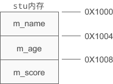
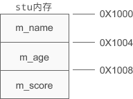

C++对象的内存模型
类是创建对象的模板，不占用内存空间，不存在于编译后的可执行文件中；而对象是实实在在的数据，需要内存来存储。对象被创建时会在栈区或者堆区分配内存。
直观的认识是，如果创建了 10 个对象，就要分别为这 10 个对象的成员变量和成员函数分配内存，如下图所示：

不同对象的成员变量的值可能不同，需要单独分配内存来存储。但是不同对象的成员函数的代码是一样的，上面的内存模型保存了 10 份相同的代码片段，浪费了不少空间，可以将这些代码片段压缩成一份。
事实上编译器也是这样做的，编译器会将成员变量和成员函数分开存储：分别为每个对象的成员变量分配内存，但是所有对象都共享同一段函数代码。如下图所示：

成员变量在堆区或栈区分配内存，成员函数在代码区分配内存。如果你对 C/C++ 程序的内存分区不了解，请阅读《C语言内存精讲》专题。
【示例】使用 sizeof 获取对象所占内存的大小：
运行结果：
12
12
12
Student 类包含三个成员变量，它们的类型分别是 char *、int、float，都占用 4 个字节的内存，加起来共占用 12 个字节的内存。通过 sizeof 求得的结果等于 12，恰好说明对象所占用的内存仅仅包含了成员变量。
类可以看做是一种复杂的数据类型，也可以使用 sizeof 求得该类型的大小。从运行结果可以看出，在计算类这种类型的大小时，只计算了成员变量的大小，并没有把成员函数也包含在内。
对象的大小只受成员变量的影响，和成员函数没有关系。
假设 stu 的起始地址为 0X1000，那么该对象的内存分布如下图所示：

m_name、m_age、m_score 按照声明的顺序依次排列，和结构体非常类似，也会有内存对齐的问题。
直观的认识是，如果创建了 10 个对象，就要分别为这 10 个对象的成员变量和成员函数分配内存，如下图所示：
不同对象的成员变量的值可能不同，需要单独分配内存来存储。但是不同对象的成员函数的代码是一样的，上面的内存模型保存了 10 份相同的代码片段，浪费了不少空间，可以将这些代码片段压缩成一份。
事实上编译器也是这样做的，编译器会将成员变量和成员函数分开存储：分别为每个对象的成员变量分配内存，但是所有对象都共享同一段函数代码。如下图所示：
成员变量在堆区或栈区分配内存，成员函数在代码区分配内存。如果你对 C/C++ 程序的内存分区不了解，请阅读《C语言内存精讲》专题。
【示例】使用 sizeof 获取对象所占内存的大小：
- #include <iostream>
- using namespace std;
- class Student{
- private:
- char *m_name;
- int m_age;
- float m_score;
- public:
- void setname(char *name);
- void setage(int age);
- void setscore(float score);
- void show();
- };
- void Student::setname(char *name){
- m_name = name;
- }
- void Student::setage(int age){
- m_age = age;
- }
- void Student::setscore(float score){
- m_score = score;
- }
- void Student::show(){
- cout<<m_name<<"的年龄是"<<m_age<<"，成绩是"<<m_score<<endl;
- }
- int main(){
- //在栈上创建对象
- Student stu;
- cout<<sizeof(stu)<<endl;
- //在堆上创建对象
- Student *pstu = new Student();
- cout<<sizeof(*pstu)<<endl;
- //类的大小
- cout<<sizeof(Student)<<endl;
- return 0;
- }
12
12
12
Student 类包含三个成员变量，它们的类型分别是 char *、int、float，都占用 4 个字节的内存，加起来共占用 12 个字节的内存。通过 sizeof 求得的结果等于 12，恰好说明对象所占用的内存仅仅包含了成员变量。
类可以看做是一种复杂的数据类型，也可以使用 sizeof 求得该类型的大小。从运行结果可以看出，在计算类这种类型的大小时，只计算了成员变量的大小，并没有把成员函数也包含在内。
对象的大小只受成员变量的影响，和成员函数没有关系。
假设 stu 的起始地址为 0X1000，那么该对象的内存分布如下图所示：

m_name、m_age、m_score 按照声明的顺序依次排列，和结构体非常类似，也会有内存对齐的问题。
关注微信公众号「站长严长生」，在手机上阅读所有教程，随时随地都能学习。本公众号由C语言中文网站长运营，每日更新，坚持原创，敢说真话，凡事有态度。

微信扫描二维码关注公众号